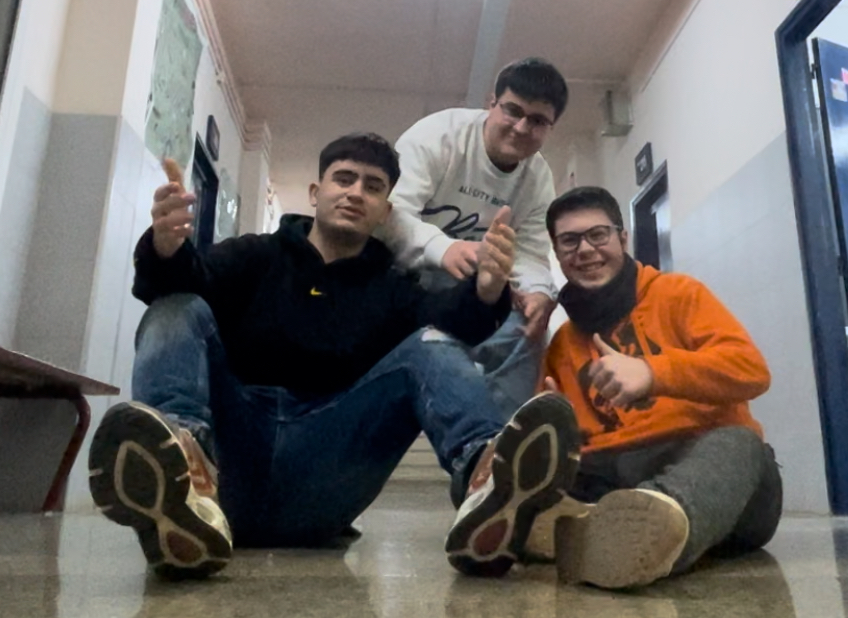
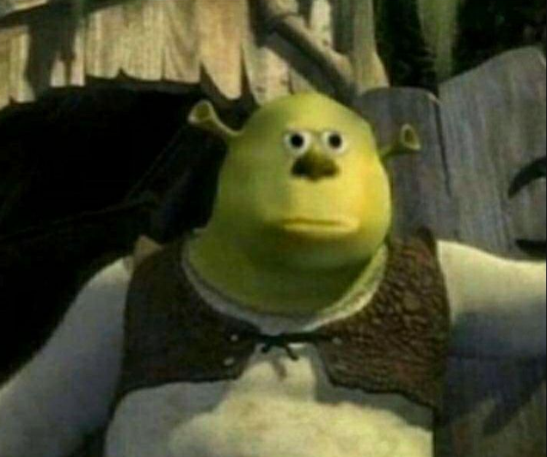

SUKUNA

Ryomen Sukuna es el antagonista principal de la serie manga Jujutsu Kaisen. Es un espíritu maldito de grado especial y el más peligroso que existe. Es conocido por muchos como el indiscutible Rey de las Maldiciones.


Ryomen Sukuna es el antagonista principal de la serie manga Jujutsu Kaisen. Es un espíritu maldito de grado especial y el más peligroso que existe. Es conocido por muchos como el indiscutible Rey de las Maldiciones.

Choso es un personaje secundario de la serie Jujutsu Kaisen. Choso inicialmente se puso del lado de la alianza de Kenjaku con Mahito hasta que descubrió que una de las identidades pasadas del usuario de la maldición era su cruel padre Noritoshi Kamo. También descubrió que Yuji Itadori,el protagonista, es otro pariente de Kenjaku y se ha alineado con su nuevo "hermano menor".
 